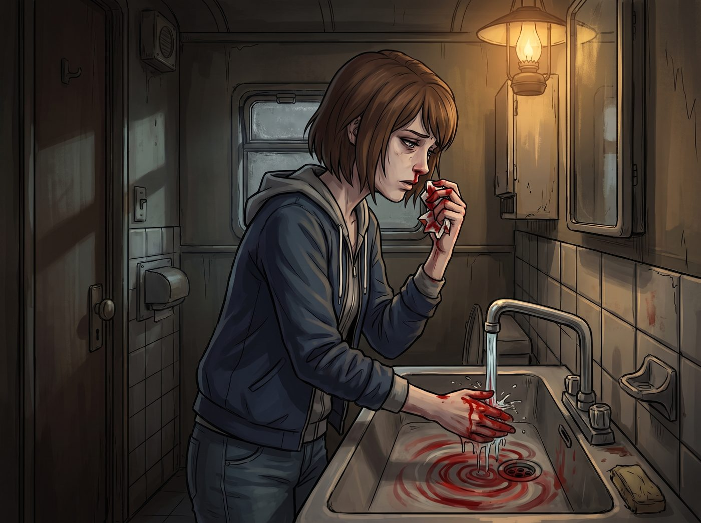

次聲波電磁海拔綜合症

第二天清晨，二號車廂的洗手間裡傳來微弱的水聲。
Max 站在狹窄的洗手台前，臉色蒼白得像一張紙。她正用冰冷的自來水瘋狂地清洗著雙手，水槽裡，一抹刺眼的鮮紅正順著水流緩緩旋轉著進入下水道。
昨天跨越了幾天的時間線去尋找 Lily，這種高強度的時空回溯對她大腦的物理壓榨是毀滅性的。此時，一陣劇烈的神經痛從額葉傳來，Max 咬著牙，感覺鼻腔裡又是一熱，兩道鮮血再次不受控制地流了下來。
她手忙腳亂地抽了幾張紙巾捂住鼻子，試圖深呼吸。
一、微血管破裂
「Maxine Caulfield學姐。」
一個幽靈般軟糯、卻不帶一絲起伏的聲音在洗手間門口響起。
Max 嚇得渾身一抖，紙巾差點掉在地上。Lily 穿著她標誌性的米色針織衫，手裡拿著一個電子簽收板，不知什麼時候已經安靜地站在了那裡。那雙隱藏在圓框眼鏡後的眼睛，正死死地盯著 Max 指縫間滲出的鮮血，以及她蒼白的鞏膜和微縮的瞳孔。
「微血管破裂，伴隨急性神經衰弱體徵。」Lily 的大腦瞬間切換到了最高級別的合規模式。她沒有像普通人那樣驚呼或者詢問妳還好嗎，而是直接在電子板上飛速點擊：「這表明您的顱內壓存在異常波動。根據營地公共衛生與生物災害應急預案，我必須立刻呼叫醫療直升機，將您轉運至具有認證的腦神經科進行全面核磁共振掃描，並提取血液樣本。」
「不！等等！別叫直升機！」Max 嚇壞了。去醫院？抽血？核磁共振？如果現代醫學儀器掃描出她大腦裡那些因為時空跳躍而產生的異常放電，她絕對會被當成某種變異體抓進真正的實驗室裡解剖。
二、臨場編造的藉口
就在 Lily 即將按下發送鍵的千鈞一髮之際，一隻滿是機油的手猛地拍在了電子板上。
「停停停！實習生！收起妳的醫療直升機！」Chloe 打著哈欠從走廊裡衝了出來。她一眼就看懂了 Max 的窘境，身為阿卡迪亞灣最會撒謊的街頭混混，她的護短機制和嘴砲技能瞬間滿血啟動。
「去什麼醫院？這就是個工傷！」Chloe 擋在 Max 面前，大腦飛速運轉，試圖編造一個能把 Lily 這種極端邏輯怪糊弄過去的藉口。
「工傷？」Lily 停下了動作，推了推眼鏡。
「對！就是……就是那個……」Chloe 瞥了一眼窗外，突然靈光一閃，「是次聲波電磁海拔綜合症！」
Max 捂著鼻子，瞪大了眼睛看著 Chloe。這聽起來像是一本科幻小說裡臨時編出來的病名。
但 Chloe 越編越順，臉不紅氣不喘：「妳昨天不是剛打開了那個聲學驅散陣列來放搖滾樂嗎？加上外面那排高功率的太陽能實驗板！這兩種東西疊加在一起，產生了非法的低頻共振！Max 的鼻腔黏膜比較薄，被這種設備級別的電磁波震破了微血管！這在我們藍領改裝車圈子裡很常見的，靠近大功率設備就會這樣！」
Max 緊張地嚥了一口血水。這個藉口簡直唬爛到了極點，把音響和太陽能板硬生生扯成了能把人震出鼻血的東西。Lily 這種大腦裡裝著整本物理學和合規手冊的怪物，怎麼可能相信？
車廂裡陷入了死一般的寂靜。
三、被採信的謊言
Lily 站在原地，圓框眼鏡的鏡片閃爍著冰冷的微光。她那顆猶如量子計算機般的大腦似乎正在高速運轉，評估著這個藉口的邏輯閉環。
幾秒鐘後。Lily 緩緩地從口袋裡掏出了一份蓋著機密印章的牛皮紙文件夾。
「您是說，聲學陣列與高功率光電轉換設備的次聲波共振嗎？」Lily 翻開文件夾，用那種令人毛骨悚然的平靜語氣唸道：「根據極端環境設備操作職業危害手冊：長期暴露於未經校準的次聲波陣列下，確有百分之零點零四的機率導致操作人員出現鼻黏膜自發性出血與短暫性神經痛。」
Lily 抬起頭，看著徹底傻眼的 Chloe 和 Max。
「原來如此。這確實是標準的設備測試工傷。」Lily 竟然點了點頭，將電子簽收板上的呼叫醫療直升機刪除，轉而打開了一個新的試算表。
「既然是工傷，就不需要去民用醫院了，那樣會洩露我們的測試機密。」Lily 乖巧地笑了笑，手裡的筆在報表上飛速記錄，「我現在立刻向合作專案後勤部申請高危環境特殊津貼，每月一千五百美元。同時，作為工傷補償，我會要求他們在明天的補給裡，加上五磅的高純度戰術補血鐵劑和頂級神戶牛肝。」
Chloe 的下巴差點掉在地上。她隨口胡謅的一個科幻名詞，居然不僅被 Lily 採信了，還被這傢伙用來合法申請了一筆津貼？！
「那……那她現在不需要去醫院了對吧？」Chloe 試探著問。
「不需要。物理止血和高鐵飲食就足夠了。」Lily 轉過身，準備回工作站去起草那份申請報告。
四、無法量化的庇護
就在她轉身的那一瞬間，Max 敏銳地捕捉到了 Lily 眼底閃過的一絲極其複雜的情緒。不是被欺騙的愚蠢，而是一種深深的、包裹在冰冷法條之下的庇護。
Max 突然明白了。
Lily 根本沒有相信那個什麼次聲波共振的鬼話。作為一個能把加州稅法玩弄於股掌之間的頂級大腦，她怎麼可能看不出 Chloe 在撒謊？她昨天在地下室醒來，看到 Max 手裡拿著那張照片時，或許就已經猜到了什麼。
但是，Lily 是個行政黑魔法師。在她的世界裡，只要你不把超能力這種無法量化的東西擺在桌面上，她就不會去追問。她不需要知道真相，她只需要一個合規的藉口，來合法地把這件事掩蓋過去，並保護 Max 不被送上手術台。
用工傷掩蓋超能力，用津貼來為救命恩人買補血的牛肝。這就是 Lily 獨有的、令人不寒而慄卻又無比溫暖的報恩方式。
「謝謝妳，Lily。」Max 捂著鼻子，聲音有些沙啞。
Lily 的腳步微微頓了一下。她沒有回頭，只是輕輕推了推圓框眼鏡，用最公事公辦的語氣說道：
「不客氣，Max 學姐。保護營地核心資產的物理完整性，是法務官的職責。請務必在午餐時將那五磅牛肝吃完，否則我無法在審計報告上做帳。」